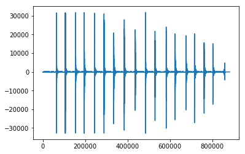
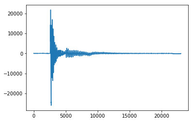
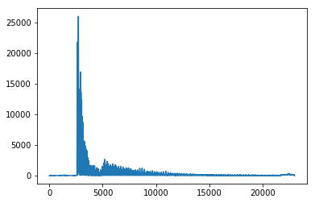
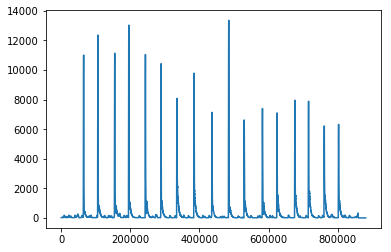
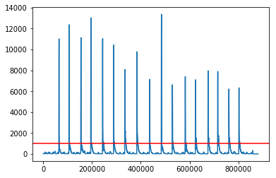
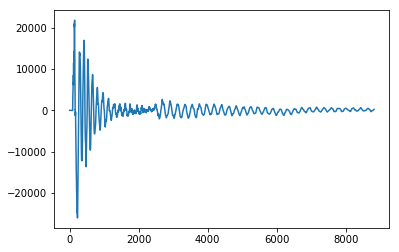

NEED TO ADD HOW IT IS HARD TO PRINT OUT SAMPLES IN DAW, ALSO MAYBE BE MORE TECHNICAL ON FIRST LIST
You hear audio samples all the time - there are countless applications. Audio engineers might use samples to add punch to a kick drum. Data scientists can use audio samples to train a machine learning algorithm to understand how to classify a kick drum sound. Film audio effects, you name it.
This post aims to show one way to split a single audio file into multiple samples. It is similar to the detect silence process found in DAWs (Digital Audio Workstations). I created this so I would not have to bounce back and forth between Python and my DAW. Plus it was fun to write. This works pretty well if you have a mono audio file with multiple single percussion hits that you need to split into multiple files.
In this post, we will:
If you like, you can skip to the script here.
Import Audio File
In this example, we will be importing a single take of one sound recorded from one microphone. The take, which you can download/listen here, consists of 17 hits on my daughters' tamborine. It actually sounds not too shabby!
Let's start by importing the Python packages we will need:
import numpy as np import struct import wave import matplotlib.pyplot as plt from urllib.request import urlopen
Typically, you would probably import an audio file straight from your machine. In this case, however, we will import the data from an online url:
drum_samples_url = (urlopen("http://www.earlydemise.com/sounds/drum_only_01.wav"))
Next, we will read in the audio file. Please note this code works for this particular file, which is a mono wave. Other files may not work. I would encourage you to
refer to Cameron MacLeod's site, which also has a more robust method. This read_whole function can be used to import audio into Python:
def read_whole(filename):
wav_r = wave.open(filename, 'r')
ret = []
while wav_r.tell() < wav_r.getnframes():
decoded = struct.unpack('<h', wav_r.readframes(1))
ret.append(decoded)
return ret
drum_samples = read_whole(drum_samples_url)
If we plot the data we can see the 17 distinct hits.
plt.plot(drum_samples)
Identify Where to Split Audio
Let's look closer at one of the hits.
plt.plot(drum_samples[527000:550000])
You can see there is a sudden spike at the hitpoint, which is the initial attack of the drum sample. A gradual descent follows. Note the values can be either positive or negative.
If we can identify the hitpoints of the 17 samples, we will know where to split them.
So we know what a hitpoint looks like when we see it, but how do we instruct Python to look for that sudden jump? There are probably a lot of ways to do it. I elected to look at the moving average.
Why moving average? Why not just look at a certain threshold? The logic behind the decision was to account for any sporadic noise that may pop up. The moving average seemed more robust since it is smoother than the actual waveform. If we see the moving average go above a certain value, it is likely a hitpoint.
However, as I noted, there are both positive and negative values in the data. So the moving average will always be somewhere around 0. To account for this positive/negative washout, we can look at the absolute value of the waveform.
drum_samples_abs = np.array(drum_samples) drum_samples_abs = [abs(number) for number in drum_samples_abs]
Here is a view of the absolute values of the same hit.
plt.plot(drum_samples_abs[527000:550000])
Note the values in drum_samples_abs are all 0 or greater, which will make it easier for us to calculate a moving average and identify spikes.
Next we'll calculate the moving average of the absolute values of the waveform. I somewhat arbitrarily chose a 1000 sample window. Here is the function we'll use:
moving_average_window = 1000
def moving_average(a, n = moving_average_window) :
ret = np.cumsum(a, dtype=float)
ret[n:] = ret[n:] - ret[:-n]
return ret[n - 1:] / n
drum_samples_moving_average = moving_average(drum_samples_abs, n = moving_average_window)
Let's plot the moving average of the absolute values of the waveform - you can still clearly see the 17 hits.
plt.plot(drum_samples_moving_average)
We will need a list to record the location of each hitpoint:
hitpoints = []
Also, we will need a threshold to help identify a hitpoint. If the waveform exceeds this value then we will add a hitpoint at that location in the waveform. Let's call the threshold min_moving_avg_value and set it at 1000. And if we plot the threshold we can see where the hitpoint will land - where the red line below crosses each hit.
min_moving_avg_value = 1000 plt.plot(drum_samples_moving_average) plt.axhline(min_moving_avg_value, color="red")
We want to make our cuts a little bit before these hitpoints. This allows for some breathing room and also accounts for the fact that we are using moving average, which adds a little bit of lag to the hitpoint. So we will create a 200 sample buffer prior to the hitpoint and call it hitpoint_buffer.
hitpoint_buffer = 200
The last variable we'll want to set here is the length of the sample. Since we are not doing any sort of fancy machine learning and we know the hits are very similar in length, we can eyball it and set the sample length at 8820 samples or .2 seconds (44100 samples in a second). This ensures we do not count the same hit twice. (Note: for sure there is plenty of room for opportunity on this piece if you want to do more complex audio samples. It does get the job done for these simple drum hits.)
single_drum_sample_length = 8820
These values above worked for me. I would encourage you to toy with these values if you want to improve your results, especially if you use a different audio file.
To split the audio, let's start by identifying the hitpoints using a for loop. This loop does the following:
last_endpoint = 0
for i in range(len(drum_samples_moving_average)):
if i < last_endpoint:
continue
if drum_samples_moving_average[i] > min_moving_avg_value:
hitpoints.append(i + moving_average_window - hitpoint_buffer) # Move hitpoint to start of sample
last_endpoint = i + single_drum_sample_length
Here you can see the start time of each hitpoint:
for hitpoint in hitpoints:
print(round(hitpoint/44100,2), "seconds")
1.46 seconds
2.4 seconds
3.5 seconds
4.43 seconds
5.52 seconds
6.55 seconds
7.59 seconds
8.71 seconds
9.89 seconds
10.99 seconds
12.01 seconds
13.2 seconds
14.16 seconds
15.33 seconds
16.23 seconds
17.26 seconds
18.2 seconds
Export Audio Segments
Let's get a preview of what one of the exported drum samples will look like. Here is the waveform of the 11th drum sample, which starts at 12.01 seconds:
testpoint = 10 plt.plot(drum_samples[hitpoints[testpoint]:hitpoints[testpoint] + single_drum_sample_length])
Prior to printing out the drum samples, let's add a version name and number that we can add to the samples to help keep things organized.
version_number = "001" version_name = "test"
We also need to set our format parameters for the wave file output. These parameters should be suitable for mono wave needs. FYI sample_number is a counter we'll be using, starting at 0.
sampwidth = 2 fmts = (None, "=B", "=h", None, "=l") fmt = fmts[sampwidth] dcs = (None, 128, 0, None, 0) dc = dcs[sampwidth] sample_number = 0
Now we will print out the sample hits.
for sample_number in range(len(hitpoints)):
ofile = wave.open("C:\Development\Python\encoder_decoder\encoder_decoder_sounds\Audio\\" + version_name + version_number + "-" + str(sample_number) + ".wav", "w")
ofile.setparams((1, 2, 44100, 8820, 'NONE', 'not compressed'))
#(nchannels=1, sampwidth=2, framerate=44100, nframes=8820, comptype='NONE', compname='not compressed')
f = drum_samples[hitpoints[sample_number]:hitpoints[sample_number] + single_drum_sample_length]
f = np.array(f)
f = f.astype('int16')
f = f.reshape(single_drum_sample_length)
for i in range(len(f)):
oframe = f[i]
oframe += dc
oframe = struct.pack(fmt, oframe)
ofile.writeframes(oframe)
ofile.close()
All done! Here is a link to the code. Would love to hear any feedback or corrections from you.